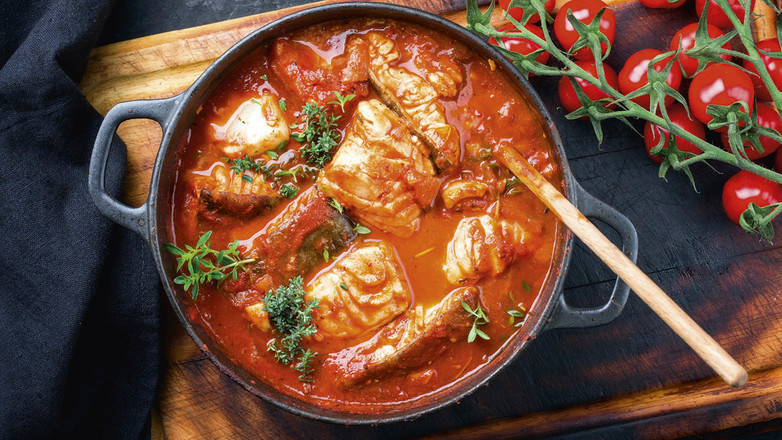

BRODET

INGREDIENTS
- 2-3 pounds of assorted fish fillets (such as cod, hake, monkfish, or sea bass), cut into large pieces
- 1/4 cup of olive oil
- 2-3 onions, chopped
- 4-5 garlic cloves, minced
- 2-3 bell peppers, chopped
- 2-3 tomatoes, chopped
- 1/2 cup of white wine
- 1/2 cup of fish or chicken broth
- 2-3 bay leaves
- 1 teaspoon of dried thyme
- 1 teaspoon of dried rosemary
- 1/2 teaspoon of sweet paprika
- Salt and pepper to taste
INSTRUCTIONS
- Heat the olive oil in a large pot over medium-high heat.
- Add the onions and garlic and sauté until the onions are translucent.
- Add the bell peppers and sauté for a few minutes until they are slightly softened.
- Add the tomatoes, white wine, and broth, and stir well.
- Season with bay leaves, thyme, rosemary, paprika, salt, and pepper to taste.
- Bring the mixture to a boil, then reduce the heat to low and let it simmer for about 10-15 minutes.
- Add the fish to the pot and gently stir to coat it with the sauce.
- Cover the pot with a lid and let it simmer for another 10-15 minutes, or until the fish is cooked through.
- Remove the bay leaves and serve the brodet hot, garnished with chopped parsley or chopped
fresh herbs of your choice, if desired.